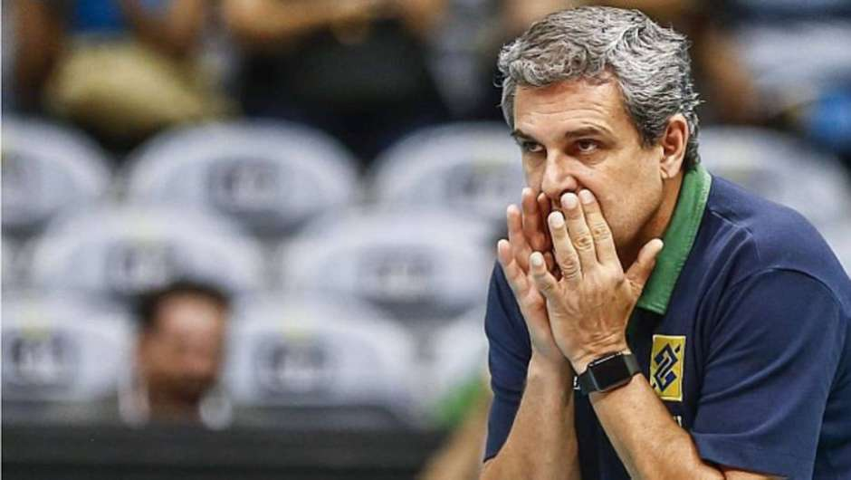
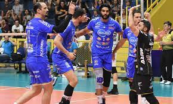
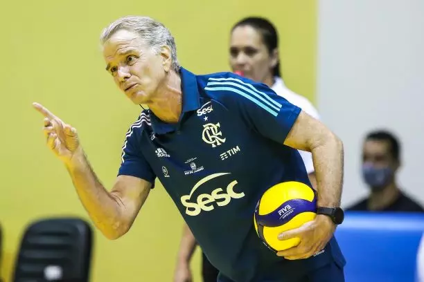

Vôlei

Sem Thaisa, seleção de vôlei vê fim da geração que desbravou o ouro
Toda história tem um começo, um meio e um fim. A da geração que ganhou o primeiro ouro olímpico do vôlei feminino brasileiro, em 2008, parece ter chegado ao fim ontem...
Saiba mais

Zé Roberto convoca mais 5 jogadores para a seleção brasileira feminina de vôlei
José Roberto Guimarães divulgou, nesta sexta-feira, a segunda convocação da seleção brasileira feminina de vôlei no ano olímpico...
Saiba mais

Taubaté sai na frente do Campinas nas semifinais da Superliga Masculina
Em busca do bicampeonato consecutivo - a temporada 2019/20 da Superliga não teve campeão porque foi encerrada de forma precoce em função da pandemia...
Saiba mais

França procura Bernardinho para assumir seleção
Em busca de um treinador para substituir Laurent Tillie depois da Olimpíada de Tóquio na seleção masculina, a Federação Francesa procurou o brasileiro Bernardinho...
Saiba maisClassificação
Superliga Brasileira de Voleibol Feminino
Série A
1-Minas
2- Vôlei Nestlé
3- Praia Clube
4- Vôlei Bauru
Classificação
Superliga Brasileira de Voleibol Masculino
Série A
1-Sada Cruzeiro
2- Vôlei Taubaté
3- Vôlei Renata
4- Minas